Task Collection File
Prerequisites
Use an anti-static wrist strap and mat while performing this procedure to prevent electrostatic discharge (ESD).
Procedure
- Use this note to refer back to something listed in the Conditions table. Added 8/11/17 in response to SME concerns that FEs won't read or remember the conditions by the time they get to a step for which a condition is critical.note: Make sure that the required condition listed above is met.
- Shutdown LOTO Startup Checkscan
- Notify affected personnel that LOTO will be applied.
- Shut down the host computer.
- Apply LOTO to the power source(s).
- Make sure power is no longer reaching the system PDU and gradient PDU by measuring the voltage at the test points.
- Alert necessary personnel that power is being restored.
- Remove the lock and tag.
- Restart the host computer
- Perform a check scan.
- GOC service cover
- Remove the service cover and disconnect the ground cable.
Figure 1. Remove the service cover and disconnect the ground cable
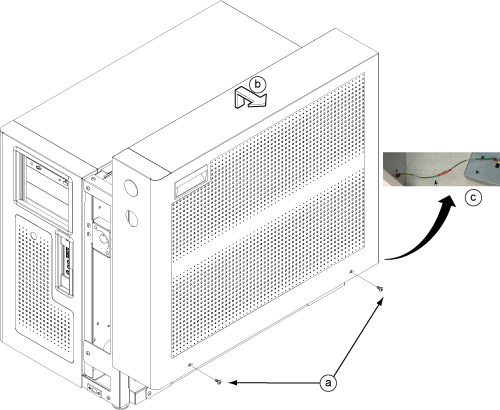
- Remove the two screws.
- Lift up and remove the service cover.
- Disconnect the ground cable.
- Reconnect the ground cable and secure the service cover back in place.
- GOC Left Side Panel
- Remove the two screws that secure the left side panel of the GOC.
Figure 2. GOC left side panel
 note: The side panel has a short ground lead connecting it to the main chassis. When removing the side panel, do not strain this ground lead.
note: The side panel has a short ground lead connecting it to the main chassis. When removing the side panel, do not strain this ground lead. - Disconnect the short ground lead that connects the side panel to the GOC main chassis at the center of the lead.
Figure 3. Left side panel ground lead
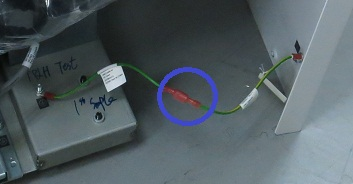
- Remove the left side panel and put it in a safe place.
- Reconnect the ground cable and reinstall the GOC left side panel.
- System Login
- note: It is possible that the customer changed the default password. If you cannot log in, contact the customer for the correct password.
- EMO reset
- Press the EMO RESET switch.
Figure 4. EMO Reset Switch
 notice: You must wait 1 hour after restoring power before performing certain calibrations and/or a customer scan.
notice: You must wait 1 hour after restoring power before performing certain calibrations and/or a customer scan. - SCIM and Keyboard
- Disconnect the USB cable from the keyboard. This is a 1 m USB extension that goes directly to the host computer.
- Lift the keyboard to detach it from the SCIM base plate. The keyboard is attached with Velcro.
- note: The glue on the Velcro must be given time to set. Do not attempt to remove the keyboard from the SCIM for 24 Hrs.
- Dust Filter
- Remove the dust filter.
Figure 5. Remove dust filter

- Clean the dust filter and reinstall it.
- If replacing the computer, remove the Velcro strips from the old computer and install them on the new computer.
- If the old filter or Velcro strips are not reusable, install a new set.
- Phantom Positioning
- Follow the steps below to place the DQA III phantom on the table.
Figure 6. Phantom positioning on table
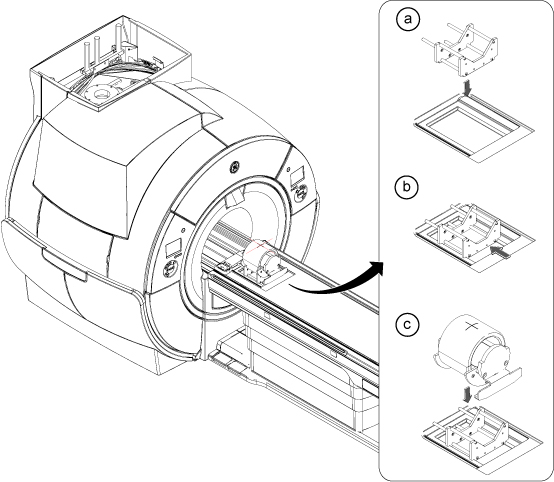
note: This image is a representative example. Actual systems may vary.- Place the phantom positioner onto the hollow for HNU. R/L direction will be fit to the hollow.
- Push the phantom positioner toward the magnet until the two bottom bars reach the end of the hollow.
- Place the phantom onto the positioner and verify it is level and not rotated.
- Landmark on the center line of the phantom. The laser must be in the middle of the line. Press Advance to Scan.
- Drain ICC Primary Water Circuit
- Close the facility water valves.
- Drain the ICC primary water circuit into a 20L draining tank.notice: The water / glycol mixture must be filled into an approved container and be disposed of properly or reused.
Figure 7. Drain the ICC primary water circuit
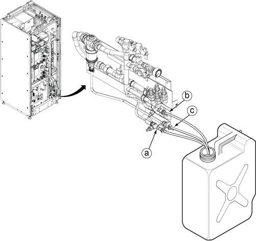
- Connect one end of the draining hose to the emergency valve (a) and place the other end in the 20L draining tank. Open the valve (a).
- Once the coolant has finished draining from (a), disconnect the hose and connect it to emergency valve (b). Open the valve (b).note: Leave valve (a) opened.
- Once the coolant has finished draining from (b), disconnect the hose and connect it to the fill and drain valve (c). Open the valve (c).note: Leave valve (b) opened.
- ISC
- Make sure power is no longer reaching the system PDU and gradient PDU by measuring the voltage at the test points.
Figure 8. Gradient PDU test points

Figure 9. System PDU test points

- Open the ISC front doors far enough to provide clearance and access to the inside of the cabinet.note: The front doors can also be removed if there is not enough space to open them all the way. Disconnect the ground wire and lift the doors up off the hinges and away from the cabinet.
- Unstrap the FRU crate, remove the cover and roll the FRU box out of the crate.Save the cotter pins if needed for shipping the returnable unit.
Figure 10. FRU crate and box

- Remove the top of the FRU box and set it aside for later user.
Figure 11. FRU box top
 The sides of the FRU box can be removed for easier access. Loosen the brackets first to remove.
The sides of the FRU box can be removed for easier access. Loosen the brackets first to remove. - Remove the FRU hoist brackets and set them aside for later use.
- Remove the leak sensor.
Figure 12. Remove the leak sensor
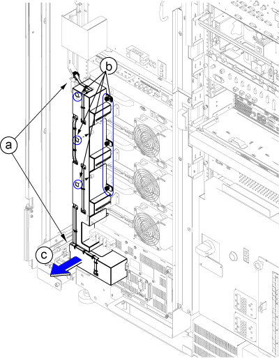
- Disconnect two connectors.
- Loosen six screws.
- Remove the leak sensor assembly.
- Drain the coolant. Refer to Draining Operation before replacing RF Amp, SSSA, or SSSPS.

- notice
- Turn the CCU circuit breaker switch to the OFF position.The CCU circuit breaker (4Q1) is located on the ICC control unit.
- Before disconnecting any hoses, verify that the ICC is turned off and place paper towels below the manifold drain valves to collect any coolant spillage.
- Disconnect the IN and OUT quick couplers of SSSPS from the water manifold.
Figure 13. Water manifold socket order

a RF amp b RGA (X) c RPS (X) d RGA (Y) e RGA (Z) RPS (Y) RPS (Z) - Connect the IN and OUT lines as illustrated and tie it down to secure it.
Figure 14. Water manifold lines

- Install the universal lift hoist on top of the ISC. Refer to Hoist Setup.
- Pull out (extend) the outer rails from inside the cabinet and connect them to the inner slide rails on the module (or component).
- notice
- Loosen the hoist chain and remove the lift brackets.
- Slowly push the unit back into the ISC taking care not to pinch any cables or hoses.
- Guided Install
- Launch Guided Install.If needed, see Accessing Guided Install for more information.
- Invoke Guided Install as root.
- When you power up the host computer and see the login screen, click on root login.
Figure 15. Login screen

- Log in with the user name: root and password: operator
Figure 16. Welcome login screen
 note: It is possible that the customer changed the default password. If you cannot log in, contact the customer for the correct password.Logging in as the root user automatically displays the Linux desktop and launches the Guided Install Starter window.
note: It is possible that the customer changed the default password. If you cannot log in, contact the customer for the correct password.Logging in as the root user automatically displays the Linux desktop and launches the Guided Install Starter window. - Click Yes to invoke the guided install.note: If No has already been selected, right-click on the Linux desktop and select Start Guided Install.
- When you power up the host computer and see the login screen, click on root login.
- Open Guided Install in FE Mode.
- Insert the Service Key.
- Open the Common Service Desktop.
- Under the Configuration tab, select .
Figure 17. Guided Install FE Mode
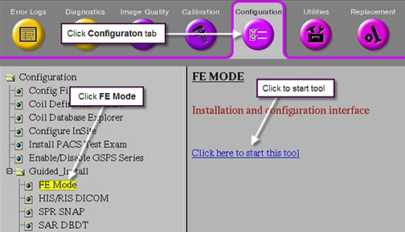
- When the C shell opens, type the root password.note: The default root password is operator. It is possible that the customer changed the password. If you cannot log in, contact the customer for the correct password.
- Verify the serial number on the magnet rating plate matches the value listed on the Guided Install Hardware configuration screen.
- Click Install IRM Software.
Figure 18. IRM installation screen
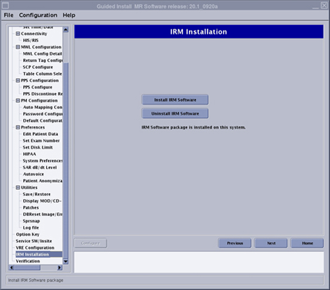
- ICW The Installation and Calibration Wizard provides an interface to navigate through required system procedures, checks and calibrations.
- From the Common Service Desktop select .note:When running ICW, the calibration tools are launched and finalized from within the ICW interface.
Figure 19. ICW calibration tool interface
When running these tools within ICW, some of the finalization tasks such as Doing a TPS reset, Saving information or Doing a check scan are not required after each calibration.
- Fill Coolant
- Check to make sure there is enough available coolant near the ICC.note: The coolant fluid is dyed for easy detection of leaks. This also helps distinguish between a leak and any abnormal condensation on the hoses.
- Use the tank funnel extension to fill the CCU and GCU with coolant as needed.note: Make sure the CCU/GCU power is off when filling the coolant tanks and checking coolant levels.note: The CCU and GCU tanks each contain approximately 4.5 gallons (17 L). A full system will use approximately 24 to 28 gallons (90 to 106 L).
Figure 20. Coolant fill

1 Funnel 2 Tank funnel extension 3 Tank filling level indicator - Unscrew the cap from the tank.
- Connect the funnel extension to the tank fill port and insert the funnel.
- Fill the tank until the coolant level is within the filling level on the tank indicator.
- Screw the cap back on the tank.
- Repeat for the other cooling unit.
- Calibrating System Gain and SNR Tool
- Move the cradle 320 mm from the home position and landmark, but do not advance to scan.
- Run the cradle in so the display reads 1135 mm.
Figure 21. Distance between landmark and center mark on body loader
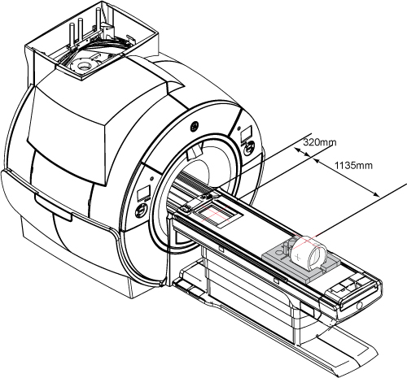
- Place the body loader on the Service Foam Positioner. Turn on the alignment light and then position the body loader on the cradle so that the alignment light is properly centered on the loader crosshair.Do not landmark after completing this step.
- Press Advance to Scan.
- Click here to start this tool.
The SNR and System Gain Calibration Tool window shows.
- Keep Body as the Coil value.
- Select the Start button.
- Pivoting the patient table control box
- Remove two screws securing the right-hand side of the table control box to the dock frame.
Figure 22. Table control box screws
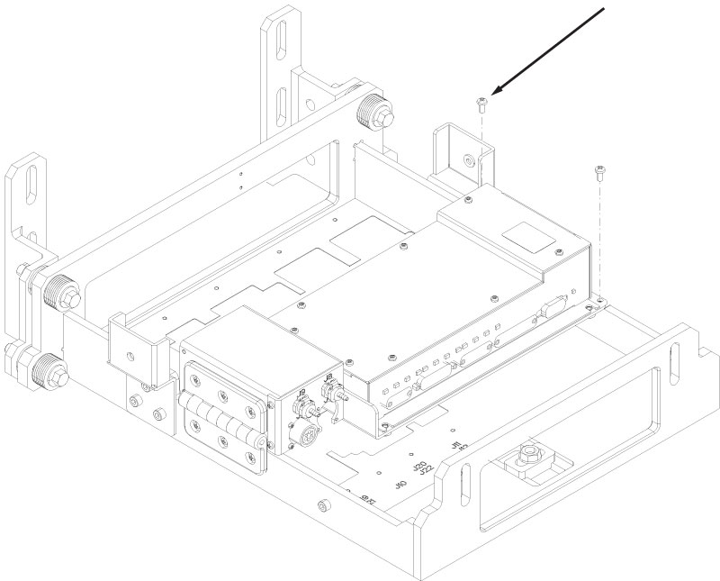
- Pivot the table control box to a vertical position.
- Restoring the patient table control box
- Lower the table control box back to a horizontal position.
- Install two screws securing the table control box to the dock frame.
Figure 23. Table control box screws
- Table casters
- Screw rod
- Relief valve opening tool
- Table gap check tool
- Login related software procedures
- note: It is possible that the customer changed the default password. If you cannot log in, contact the customer for the correct password.
- Installing software options with eLicense generated keys
- Go to the eLicense website http://elicense.gehealthcare.com and log on using your single sign-on (SSO) username and password.
- Select the Service Tools Desktop.
- From the Service Desktop Manager, select Guided Install and select Start… to open Guided Install.
- When a command window displays the message Type Root Password, type the system's root password: operator (default), and press Enter.note: It is possible that the customer changed the default password. If you cannot log in, contact the customer for the correct password.
- Once the Guided Install window opens, select the Option Key tab.
- Select to exit the Guided Install tool.
- Reboot the computer and verify that all options are available.
- Complete a SaveInfo to retain all newly installed options on an Info MOD.
- Rename the file by typing mv license.sh flexkeys_install.
- Reboot the system.
- Verify that a dialog box displays the message New option keys have been installed after the Please do not interact with the system until this message disappears… window disappears.
Figure 24. Boot up message after installing new options

- Open Guided Install, and verify the downloaded option keys are installed as permanent keys on the Option Key tab.
- Installing the inverted button label on the pneumatic alert box
- Clean the surface of the control box.
- Remove the adhesive backing from the metal nameplate and apply the nameplate over the silk screened lettering as shown.
Figure 25. Control box nameplate
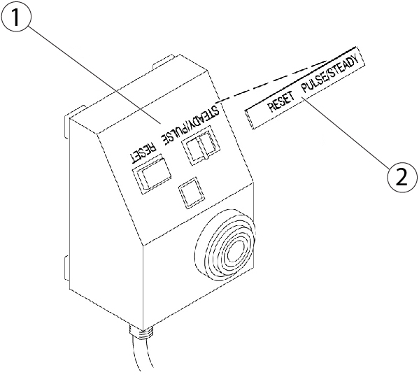
1 Silkscreen 2 Nameplate Raising the bellows cover - Remove the six screws securing the bottom of the bellows cover; three on the left-hand side and three on the right-hand side.
Figure 26. Bellows cover screws

- Lift up the telescopic cover and secure it in the up position with six strips of Velcro.
Figure 27. Bellows cover Velcro strips
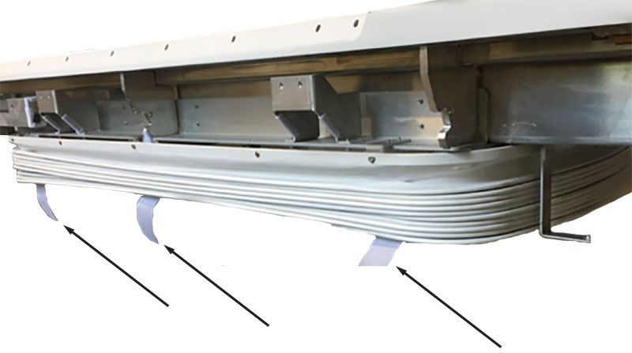
- Remove the six screws at the top of the bellows cover, three on the left-hand side and three on the right-hand side, and lower the bellows cover.
Figure 28. Bellows cover top screws
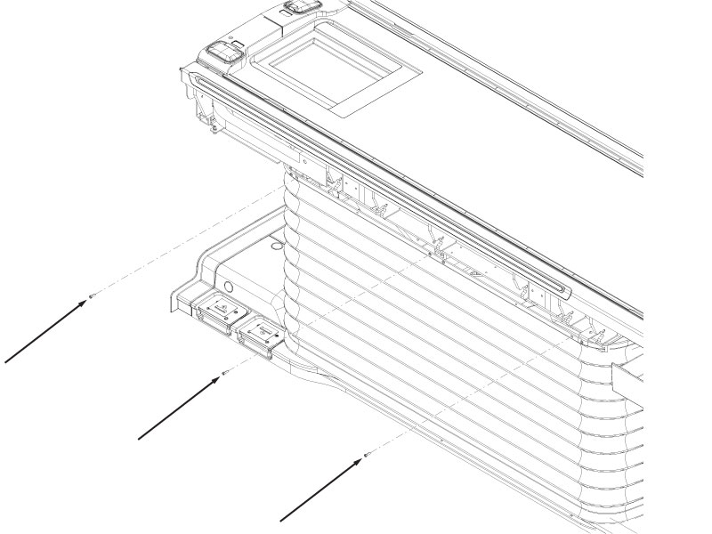
Lowering the bellows cover - Release the six strips of Velcro holding the cover up.
Figure 29. Bellows cover Velcro strips
- Install the six screws that secure the bottom of the bellows cover; three on the left-hand side and three on the right-hand side.
Figure 30. Bellows cover screws
Finalization
- Open the facility water valves and check all the hose connections to make sure there are no leaks.
- Turn on the F50 cryocooler power and confirm that the F50 and the cold head are working correctly.
- Turn on the ISC power. Refer to Removing ISC LOTO.
- Perform check scan.